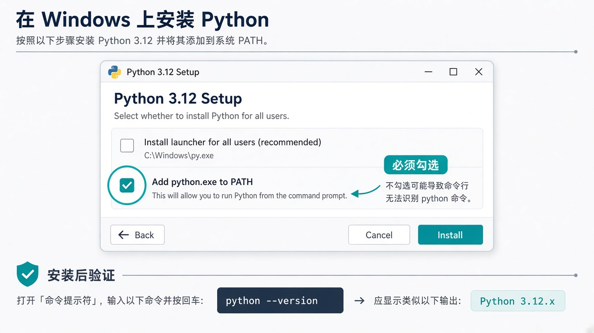
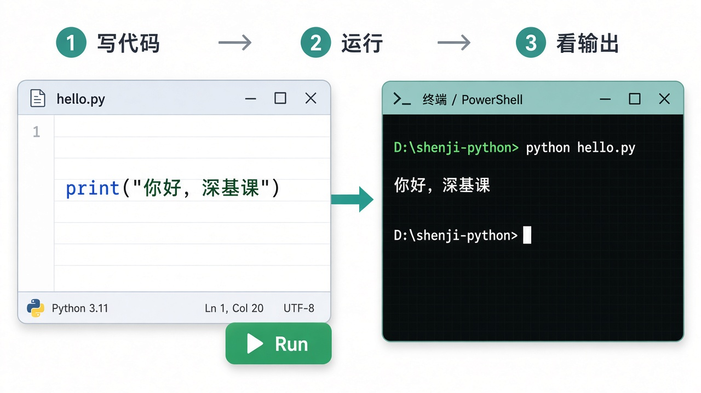
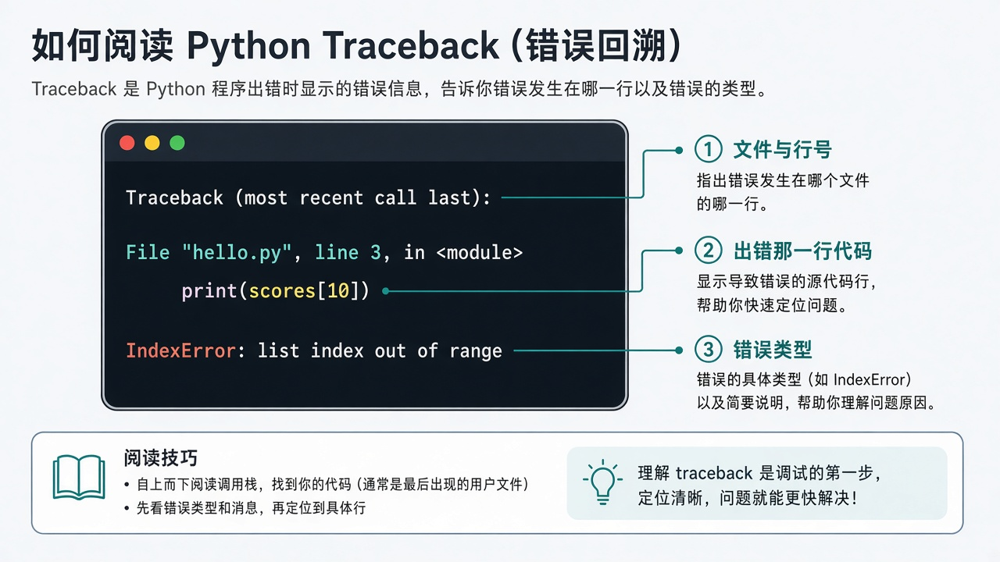

0. 怎么学 · 从哪开始
零基础最容易犯的错有两个：一是环境没配好就猛学语法；二是把教程当小说看完，却一行都没跑过。
本章顺序固定为：
- 下载安装 Python（勾选 PATH）
- 配置环境（终端验证、装编辑器、建练习文件夹）
- 再写第一个程序，然后学变量、判断、循环……
建议时间：仅「安装 + 配环境」留出 30–60 分钟，一次配通。整章语法部分约 8–12 小时，可拆成多天。配不通不要硬往下背概念。
你需要准备：一台 Windows 电脑（本节按 Windows 写）、能上网。手机不适合做环境配置和练习。
1. 第一步：下载安装 Python
Python 是一种编程语言；你要先在电脑上安装它的「运行器」（解释器）。没装好之前，写再多代码也跑不起来。
1.1 下载
- 用浏览器打开官网下载页：https://www.python.org/downloads/
- 点黄色大按钮下载 Windows 安装包（一般是最新的 Python 3.x，如 3.11 / 3.12 / 3.13 均可入门）。
- 得到一个类似
python-3.xx.x-amd64.exe的安装文件。
说明：尽量从官网下载。第三方「绿色版 / 破解包」容易缺组件或带来安全风险，初学不建议。
1.2 安装（最关键的一步）
- 双击安装包。
- 进入安装界面后，先看底部选项：务必勾选
Add python.exe to PATH（把 Python 加入系统路径）。 - 再选
Install Now（或自定义安装也行，初学用默认即可）。 - 等待完成，看到 Setup was successful / 安装成功，关闭窗口。

为什么 PATH 这么重要？勾了之后，你才能在任意终端里直接输入 python。没勾的话，常会出现「找不到 python」或「不是内部或外部命令」。
1.3 安装后立刻验证
- 关掉旧的终端窗口（如果之前开着），重新打开一个。新开很重要，否则可能读不到刚改的 PATH。
- 打开方式：开始菜单搜索
PowerShell或终端/cmd。 - 输入下面命令，回车：
python --version成功示例：Python 3.12.3（版本号不必相同，有 Python 3.x 即可）。
再试一条：
python -c "print(1+1)"应输出 2。这说明：Python 已装好，并且能执行指令。
1.4 如果失败了（按顺序排查）
- 提示找不到命令 / 不是内部或外部命令 → 多半没勾 PATH。最省事：卸载后重装，这次务必勾选；或重新运行安装包选 Modify，勾上 PATH 相关选项。
- 输入
python却弹出微软应用商店 → 在「设置 → 应用 → 高级应用设置 → 应用执行别名」里，关掉两个python.exe/python3.exe别名，再新开终端重试。 py --version能通但python不通 → 可暂时用py命令，同时建议修好 PATH，统一用python。- 装了多次、版本混乱 → 开始菜单搜 Python，看装了几个；入门阶段保留一个 3.x 即可，把版本号记下来问老师。
完成 0 / 3 步
过关线：上面 3 项都勾上，再进入下一节。配不通不要跳到语法。
2. 配置环境：终端、文件夹与编辑器
Python 装好只是一半。还要有一个写代码的地方，以及你每次练习都待在同一个文件夹里，避免「文件找不到」。
2.1 认识终端（命令行）
终端是你给电脑下文字命令的窗口。后面 python hello.py、pip install 都在这里完成。
- Windows 推荐用 PowerShell 或系统「终端」应用。
- 提示符里通常会显示当前所在文件夹路径。
- 常用：
cd 文件夹路径用来进入目录；dir（cmd）或ls（PowerShell）用来查看当前有哪些文件。
cd D:\shenji-python
dir2.2 建练习文件夹
例如在 D 盘（或桌面）新建：D:\shenji-python。名字尽量用英文和数字，少用空格和中文，后面路径不容易出错。
以后本章所有 .py 都放进这个文件夹。
2.3 安装代码编辑器（三选一即可）
不要用 Word。下面任选一个能写代码、能开终端的工具；课上若老师指定，以老师为准。
- VS Code（免费，普及）：code.visualstudio.com
- Cursor（AI 编程编辑器）：适合边写边问 AI，按老师要求安装即可
- Codex（OpenAI 的 AI 编程助手 / 相关客户端）：同样可用于写代码、改错、补全；安装与登录方式按老师发放的说明操作
怎么选：不会选就先装 VS Code 把环境跑通。后面「用 AI 写代码」时，Cursor 与 Codex 用法类似——一次只让 AI 写一小块，并自己验收。
- 安装编辑器（或 Codex 客户端）。
- 打开工具 → 打开 / 选择文件夹 → 选中
D:\shenji-python。 - 左侧（或项目区）能看到该文件夹，说明工作区对了。
- （可选）若用 VS Code，可安装 Python 扩展便于高亮；没有也能先写。
2.4 在编辑器里打开终端（推荐）
VS Code / Cursor / Codex 相关环境里，一般都能打开集成终端（常见入口：菜单「终端 → 新建终端」，或快捷面板搜索 Terminal）。终端默认落在当前项目文件夹，少敲很多 cd。
完成 0 / 3 步
过关线：安装 Python（上一节）+ 本节 3 项都完成后，再写第一个程序。
3. 第一个程序
程序 = 一串按顺序执行的指令。你写成 .py 文件，再让 Python 一行行执行；用 print 把结果打印到终端。
- 在练习文件夹新建文件：
hello.py - 写入下面一行（注意是英文引号）：
print("你好，深基课")- 保存文件（Ctrl+S）。
- 确认终端已在练习文件夹内，再运行：
cd D:\shenji-python
python hello.py成功时，终端会打印：你好，深基课。

这行代码在干什么？
print：Python 自带的「打印」功能（函数）。- 后面的括号
()：把要打印的内容传给它。 "你好，深基课"：一段文字，叫做字符串。必须用引号包起来。
常见翻车：
- 用了中文引号
“”→ 报错。改成英文"或'。 - 文件没保存就运行 → 还是旧内容。先 Ctrl+S。
- 终端不在该文件夹 →
can't open file。先cd进去，或在编辑器里对文件右键「在终端中运行」。 - 仍提示没有 python → 回到第 1 节把安装与 PATH 修好，不要先改代码。
动手：把打印内容改成你的名字，再运行一次。再试 print(1 + 2)，观察和打印文字有什么不同。
4. 注释与缩进（新手必过关）
注释
以 # 开头的行是给人看的说明，电脑会忽略：
# 这是注释，不会执行
print("这行会执行")缩进
Python 用行首空格表示「这段代码属于上面那一块」。别的语言常用大括号 {}，Python 用缩进，这是最大的习惯差异。
if True:
print("这一行前面有缩进，属于 if")
print("这一行没有缩进，不属于 if")铁律：同一层级缩进必须一致。建议一律用 4 个空格，不要混用 Tab 和空格。编辑器一般可设置「按 Tab 插入 4 空格」。
缩进错了，常见报错是 IndentationError。看到这个词，先查空格，别先怀疑逻辑。
5. 变量：给数据起名
变量就像贴了标签的盒子。标签是名字，盒子里是值。
name = "小陈"
age = 20
height = 1.75
is_student = True
print(name)
print(age)
print(type(name), type(age), type(height), type(is_student))四种最常用类型
str：字符串（文字）int：整数float：小数bool：布尔值，只有True/False（注意首字母大写）
命名习惯（现在养成）
- 用英文或拼音，如
learning_rate、batch_size - 多个词用下划线连接（蛇形命名）
- 不要用
1name（不能数字开头），不要用print、list这种 Python 已有的名字当变量名
重要直觉：x = 3 不是数学里的「x 恒等于 3」，而是「现在把名字 x 指向 3」。可以再写 x = 5，名字还在，值换了。
动手：定义 lr、epochs、model_name 三个变量并打印。用 type(...) 确认类型。
6. 数字与运算
a = 10
b = 3
print(a + b) # 加 13
print(a - b) # 减 7
print(a * b) # 乘 30
print(a / b) # 除 3.333...（结果是 float）
print(a // b) # 整除 3
print(a % b) # 余数 1
print(a ** b) # 乘方 1000深度学习里常见：学习率 0.001、batch 大小 32、算平均 loss 等，都是这些运算。
坑：/ 即使两个整数相除，在 Python 3 里也会得到小数。需要整数商时用 //。
动手：分数 [80, 90, 70]，手算平均，再用代码 (80+90+70)/3 验证。
7. 字符串（文字）
s1 = "hello"
s2 = 'world' # 单引号也可以
s3 = s1 + " " + s2 # 拼接
print(s3)
print(len(s3)) # 长度
print(s3[0]) # 第一个字符
print(s3[-1]) # 最后一个字符把变量嵌进句子：f-string（强烈推荐）
epoch = 3
loss = 0.56
print(f"第 {epoch} 轮，loss={loss}")f"..." 里用 {变量名} 插入值。后面写训练日志会一直用到。
坑：数字和字符串不能直接相加。"轮次" + 3 会报错。写成 f"轮次{3}" 或 "轮次" + str(3)。
动手：用 f-string 打印：你的姓名、年级、一句「我在学深基课」。
8. 条件判断 if
让程序按情况走不同分支：
score = 75
if score >= 90:
print("优秀")
elif score >= 60:
print("及格")
else:
print("不及格")if：如果条件成立就执行缩进块elif：否则如果（可以有多个）else：前面都不成立时- 条件后面必须有英文冒号
:
常用比较
==等于（两个等号！一个=是赋值）!=不等于><>=<=and/or/not组合条件
acc = 0.91
if acc >= 0.9 and acc <= 1.0:
print("准确率看起来正常")动手：改 score 为 55、60、95，各跑一次，确认三种输出都会出现。
9. 循环 for（重复做事）
训练模型常说「跑 20 个 epoch」——本质就是循环 20 次。
for i in range(5):
print(f"第 {i} 次")range(5) 产生 0,1,2,3,4（从 0 开始，不包含 5）。
names = ["甲", "乙", "丙"]
for name in names:
print(name)和 while 的区别（先有个印象）
for 适合「已知要循环多少次 / 遍历一个列表」；while 适合「条件成立就一直做」。零基础阶段先把 for 用熟即可。
坑：忘记冒号、忘记缩进；或误以为 range(5) 是 1 到 5。打印出来看一眼就明白。
动手：用循环打印 1 到 10；再用循环计算 1+2+...+10（准备一个 total = 0，循环里累加）。
10. 列表 list：一串有顺序的数据
列表用方括号。深度学习里的一批 loss、一组文件名，常用列表。
losses = [0.9, 0.7, 0.55]
print(losses[0]) # 0.9，下标从 0 开始
print(losses[-1]) # 0.55，最后一项
print(len(losses)) # 3
losses.append(0.48) # 在末尾追加
print(losses)
# 遍历
for loss in losses:
print(loss)
# 求和 / 平均
print(sum(losses))
print(sum(losses) / len(losses))切片（先会用即可）
nums = [10, 20, 30, 40, 50]
print(nums[1:4]) # [20, 30, 40]，含左不含右坑：losses[3] 在只有 3 个元素时会 IndexError（合法下标是 0、1、2）。先 len 再取下标。
动手：建立本学期三门课分数列表，打印最高分（可用 max）、最低分、平均分。
11. 字典 dict：用名字取值
字典用花括号，里面是「键: 值」。适合存配置、一条样本的多个字段。
config = {
"lr": 0.001,
"batch_size": 32,
"model": "resnet18",
}
print(config["lr"])
config["epochs"] = 20 # 新增或修改
print(config)
# 遍历键和值
for key, value in config.items():
print(key, value)- 取值用
config["lr"]，键必须存在，否则KeyError - 不确定键在不在时，用
config.get("lr")（没有则返回None）
动手：做一个学生字典：姓名、学号、分数列表。打印姓名，并算分数平均。
12. 函数 def：把一段逻辑打包
函数 = 起个名字的可复用代码块。输入（参数）进去，输出（return）出来。
def average(nums):
"""计算列表平均值。若列表为空，返回 0.0"""
if len(nums) == 0:
return 0.0
return sum(nums) / len(nums)
scores = [80, 90, 70]
result = average(scores)
print(result)逐行理解
def average(nums):：定义函数，名字叫average，接收参数nums- 函数体必须缩进
return：把结果送回调用处；没有return时默认得到None- 调用：
average(scores)——注意要加括号
为什么要写函数？
后面读数据、算准确率、保存结果，都会反复出现。写成函数后，主流程能读成「故事」：先读数据，再训练，再评估——而不是一百行糊在一起。
动手：写 def grade(score):，返回 "优秀" / "及格" / "不及格"。对 55、60、95 各调用一次。
13. 读写文件
数据、日志、预测结果都在文件里。先掌握文本文件。
写入
with open("notes.txt", "w", encoding="utf-8") as f:
f.write("epoch=1 loss=0.82\n")
f.write("epoch=2 loss=0.71\n")"w"：写入模式（文件已存在会被覆盖）encoding="utf-8"：中文不容易乱码\n：换行with ... as f：用完自动关闭文件，养成习惯
读取
with open("notes.txt", "r", encoding="utf-8") as f:
text = f.read()
print(text)
# 或者一行行读
with open("notes.txt", "r", encoding="utf-8") as f:
for line in f:
print(line.strip()) # strip 去掉首尾空白和换行坑：找不到文件 FileNotFoundError——多半是终端当前目录不对，或文件名拼写错。用编辑器看清文件到底在哪个文件夹。
动手：写入三行自己的笔记；再读出来打印。然后只打印第二行。
14. 报错怎么读（比会写新语法更重要）
报错不是「电脑骂你」，是一份定位说明书。请从最后几行看起：
Traceback (most recent call last):
File "D:\shenji-python\hello.py", line 3, in <module>
print(scores[10])
IndexError: list index out of range
- 哪份文件、第几行：
hello.py第 3 行 - 错误类型：
IndexError - 一句话原因：下标超出范围
新手高频错误类型
SyntaxError：语法写错（缺冒号、引号不配对）IndentationError：缩进问题NameError：用了没定义的名字（拼写错或没赋值）TypeError：类型不匹配（字符串加数字等）KeyError/IndexError：字典键或列表下标不对FileNotFoundError：文件路径不对
习惯：先自己根据「文件 + 行号 + 错误类型」猜一分钟，再问人 / 问 AI。把完整报错原样复制，不要截半截。
15. 虚拟环境与 pip（为后面装 PyTorch 做准备）
你的电脑上可能有很多项目。虚拟环境（venv）= 给当前项目单独开一间「干净的库房」，包装在里面，不污染系统。
创建
cd D:\shenji-python
python -m venv .venv会多出一个 .venv 文件夹（不用手改里面的文件）。
激活（Windows PowerShell）
.\.venv\Scripts\Activate.ps1成功后，行首通常出现 (.venv)。若提示无法运行脚本，可能是执行策略限制，可在老师指导下调整，或改用：
.\.venv\Scripts\activate.bat用 pip 装包
python -m pip install -U pip
python -m pip install numpy验证：
python -c "import numpy; print(numpy.__version__)"铁律：装包前先看终端有没有 (.venv)。没有的话，可能装到系统 Python 里去了，后面项目会乱。
动手：创建并激活 venv，安装 numpy，打印版本号。退出环境可输入 deactivate。
16. 综合练习（请分步做完）
在练习文件夹新建 score_report.py。按步骤实现，每做完一步就在下面打勾（进度会保存在本机浏览器里，刷新不丢）。
完成 0 / 4 步
参考实现（先自己写；实在卡住再对照，对照后合上重写一遍）：
def mean(scores):
return sum(scores) / len(scores)
def level(avg):
if avg >= 90:
return "优秀"
elif avg >= 60:
return "及格"
else:
return "不及格"
student = {"name": "小陈", "scores": [88, 76, 93]}
avg = mean(student["scores"])
grade = level(avg)
lines = [
f"name={student['name']}",
f"scores={student['scores']}",
f"mean={avg:.2f}",
f"level={grade}",
]
with open("report.txt", "w", encoding="utf-8") as f:
f.write("\n".join(lines) + "\n")
with open("report.txt", "r", encoding="utf-8") as f:
print(f.read())过关自检（请逐条打勾）
全部勾完再进下一章。勾选会保存在本机浏览器；换电脑或清缓存会丢失，属正常。
完成 0 / 11 项
缺哪条就回到对应小节重做「动手」。全部勾完，再进入下一章「数据与计算（NumPy）」。
用 AI 学这一章（零基础专用规矩）
可以问 AI（ChatGPT、Cursor、Codex 等），但目标是你自己会跑、会改，不是「有一段能交的代码」。Cursor 与 Codex 都是「在写代码的环境里问 AI」，提问规矩相同。
- 一次只问一个问题（例如「为什么报 NameError」）。
- 先自己根据行号改一版，再让 AI 看。
- 禁止：把整章综合练习直接丢给 AI 生成后交差。
- AI 给的每一行，你要能说清作用；说不清就删掉重写。
我是零基础本科生，在学 Python。
环境：Windows，Python 版本是 ____，编辑器是 VS Code / Cursor / Codex（选填）。
请不要直接给完整作业答案。
我的目标是理解，请用初中生能懂的话解释。
我的代码：
（粘贴）
完整报错：
（粘贴）
请：1）指出最可能的一处错误；2）只建议修改哪几行；3）给我一个最小的对照例子。